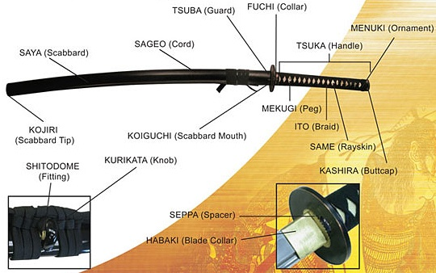

|
Tetra Blade's |

|
|||
Katana's
| Expensive Katana's $600+ (none stainless) | Cheap Katana's (stainless steel) |
|---|---|
Pros
|
Pros
|
| When it comes to katana blades there are many different types of metals that can be used for the swords. However The stainless steel katana's are simply not sutable for a katana unless it is a display sword. Meaning it has no functional use. When it comes to the blade of a katana the bare minimum steel needed for this type of sword is 1055 Carbon steel. However, the Most Optimal steel would be some form of spring or tool steel. Which has better strength than the Carbon steels and more pliable. | |
| Parts of the Katana | |
|  | |